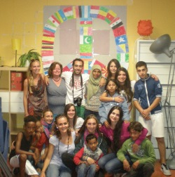

Projecten
Overig
Let’s give peace a chance
Marine Doisy, Almelo, 2013
"All we are saying is to give peace a chance". John Lennon said this some years ago. Nowadays, many countries are in wartime, and I realize that, in our daily life, we don’t measure how lucky we are to live in a country in peace, benefiting from liberty and rights.
In fact, in general, we few know what is really happening in Afghanistan, Iraq, Somalia… - we know few, but I could also say at all. By the way, it’s as much “we don’t know”, than “we don’t want to know”. The international civic service sends volunteers from all over the world in diverse work camps, anywhere in the world, in order to promote peace.
With scouts, I had the opportunity to participate in CCFD actions for few years; there, I learnt that world can actually move, that one little step leads to another one, that huge things begin with little ones. I went to the Netherlands for two weeks, in an Asylum Seekers Center (AZC), with around ten other international volunteers: Spanish, Moldavian, Italian, American, Indonesian, and Russian… A real melting pot for meeting and sharing! I was welcomed in Almelo center, which host 400 asylum seekers, from 44 different nationalities. I went there with apprehension, not knowing what I was truly going to find; I went there being scared of the unknown, being scared of “foreign”. I just found there Life, Respect, Attentions, Laughers, Sharing …and difficult stories. Too often, we reject what we don’t know. Too often, we don’t take the time needed to meet the Other. I will never forget this experience. Never. This center host families of refugees waiting for an answer to their asylum procedure, or waiting for being taking back to the border, to their country. They are families with less than 18 year-old children; in this case they can’t be push out of the country. It was an opportunity for me, to learn a bit more about how the immigration regulation in Europe works.
Every day, we organized activities for the children and teenagers, or even for the adults, who don’t have anything to do during their holidays. Most of them spoke dutch, as they learn it at school. We could manage to communicate with English. Games from different countries, do-it-yourself, coloring, volleyball and other sports, cinema, dance… It could be somehow difficult to communicate; but they were all so lovely!! As soon as we got out of our bedroom, the kids came to see us, to play. They’re just like every child in the world, with their bright eyes, theirs laughers and their cries also, their games… So how can we understand they have to stay dozens of years in a center? How could we accept that kids, insouciant and innocuous, have to leave their country to get a better life?
They leave their country, their family, even their parents sometimes. Some teenagers were theer for years, all by themselves. It touches me particularly; they’re my age. I’m impressed by their courage and their calm also. Here, the most of us have parents, families behind us to help, support us. Them, they give up everything to get what us, we consider as acquired. The most difficult is trying to understand: why does it happen? Why refugees are so badly welcomed, so meanly received here, whereas they deserve to have an as great life as ours? Why children -and adults- found themselves waiting 18 years for a verdict which doesn’t arrive? I imagine that in fact, we can’t understand it. These two weeks were amazing; when I think about it, I tell myself I’m not allowed to find it amazing though. It’s an extraordinary and unique experience, which I can only be glad to have lived. But it’s not an amazing life for them.
However, I have to admit that I was impressed by the installations in the center and how clean it was. Dutch people can be somewhat proud of the structures taking place there. I don’t know enough about which infrastructures France propose to her asylum seekers, but I wish I could be proud of the way we hosted them; which I’m not. I doubt we know to do it as well as they do.
I just went there for two weeks, but I feel really attached to them; much more than what I expected to be. The last day, we organized the “See you later party”, to have a last awesome moment, and say goodbye. The kids and teenagers helped us to decorate the center. We made hamburgers, and women of the center had made more than 300 pancakes. There were inflatable games, football tournament, and other little games we organized: a fantastic day, just like the one we could have in a real holiday’s camp. But then, there is the “good bye” -the “goodbyes” actually, and we get back to reality. We tell ourselves it was awesome, but at the same time, we realize we probably won’t see them again. Each volunteer come back to its country, to its family. And them, they stay there, for an undetermined duration …undetermined and stressing. It’s a waste of life, of time, of energy.
It’s hard to explain what we feel, now that we came back. On Facebook, we talk between volunteers, and one of them told me: “It’s strange feeling to see nobody understands how I feel (…). It’s like a job I have to do with myself”. This is exactly it. Absurd feeling of revolt, pain, and joy, in regards to what we lived.
Two days after we came back, I learnt that a family I knew there finally got its papers, after thirteen years in Netherlands. I got so glad!!! It’s difficult to know them, to want them to have all what we have, but to be utterly powerless in front of the situation. It makes want to move mountains, to scream to the wind, to the people, that the world doesn’t turn the right way in spite of all the beauty it offers. …But nothing happens.
Sometimes, when I watch the world, I tell myself everything will be all fine. There is the wind, the stars, the laughers, the cries; the Earth is turning, and we’re turning with it. And sometimes, I’m scared of the future. I’m scared for them; I’m scared for you; I’m scared for me. I tell myself: yes, the Earth is turning, and yes, I am turning with it, but it doesn’t turn fine and humans either. I think this experience put me in front of my confusion. Actually, I think this confusion is even bigger than it used to be. But now I surely know, with certitude, that it has a sense, that it can give sense to life; and that this sense can be seen in the look of one of these children.